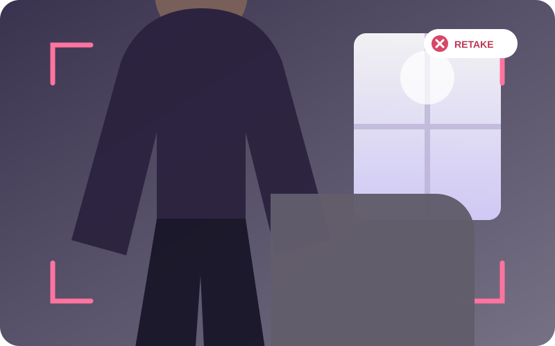

Clear from head to shoes
Bright front light, neutral pose, sharp focus, and breathing room around the outfit.
Clear framing helps ClothMatics understand the clothes you want to save or check. Use these quick guides before opening Camera in the mobile app.
See the quick checklistUse this when saving clothes from a full-body outfit photo.
Step back until the top of the head and both shoes have comfortable space around them.
Leave a small gap between the arms and body so garment edges remain visible.
Face the main light source. Avoid bright windows or lamps directly behind you.
Keep other people, reflections, and large distractions outside the frame.
A neutral, clear photo makes style feedback more useful.
Include every important layer, the complete silhouette, and footwear.
Use the regular camera view and wait for focus before taking the photo.
Move bags, crossed arms, furniture, and other objects away from the outfit.
Face the camera naturally so fit, length, and proportions are visible.
Use a flat surface or hanger and keep the shape easy to separate from the background.
Do not photograph a pile, folded stack, or multiple separate pieces together.
Straighten the fabric so the garment’s true shape and length are visible.
Leave clear space around sleeves, hems, straps, and collars.
Remove hands, accessories, furniture, and other garments from the item.
Bright front light, neutral pose, sharp focus, and breathing room around the outfit.

Shoes are missing, the subject is dark, and background objects overlap the outfit.
Open a question to see the recommended next step.
Open your phone Settings, find ClothMatics, and allow Camera access. Return to the app and open Camera again.
Open your phone Settings, find ClothMatics, and allow Photos or Gallery access. You can choose limited or full access where supported.
Clean the lens, add more light, hold the phone steady, tap the garment to focus, and wait a moment before taking the photo.
Move farther away or rotate the phone if needed. Keep the whole outfit and shoes—or every edge of one garment—inside the frame.
Keep ClothMatics open, check your connection, and avoid switching apps during processing. If it remains stuck, return to Camera and retry with a smaller, sharper photo.
Choose Add to Closet, Style Check, or Single Garment, then use the checklist before taking your photo.